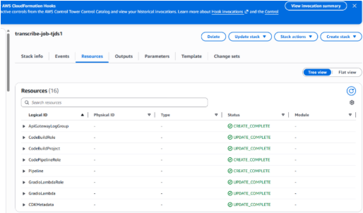
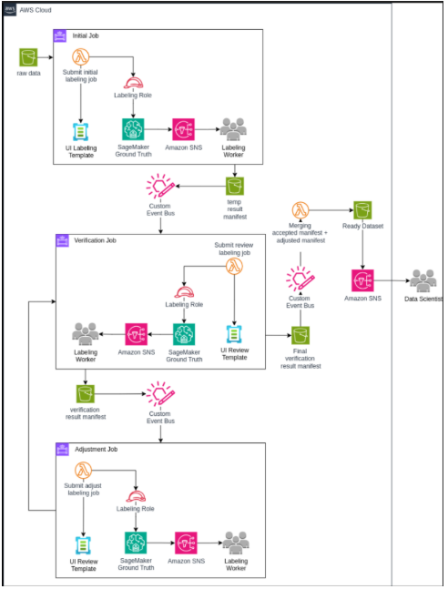
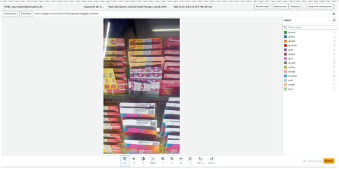
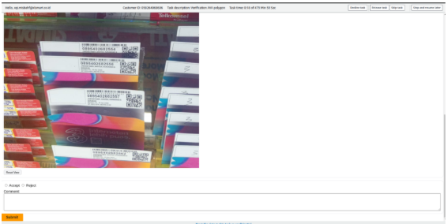
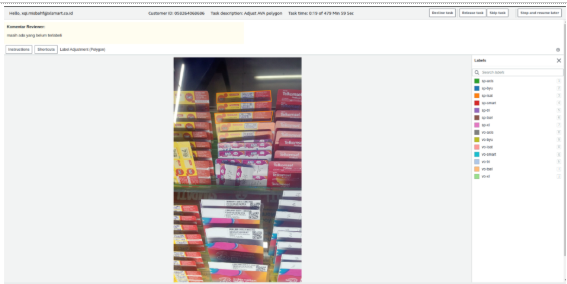
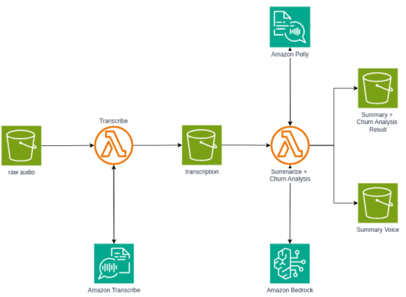
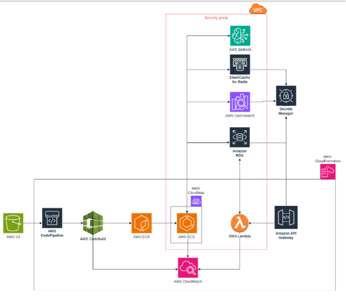
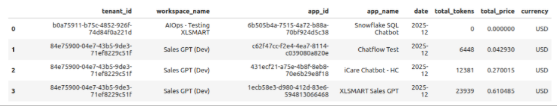

XL Voyager
Project Overview:
Voyager is an internal initiative designed to support the XLSmart team in handling day-to-day operational and analytical tasks more efficiently. The project focuses on strengthening AI-driven workflows and operational automation to ensure reliability, scalability, and smooth integration of machine learning systems into regular business processes.
Role: MLOps Engineer
Organization: XLSmart Telecom Sejahtera Tbk
Role Description:
As part of the AI Operations team, I am responsible for supporting and maintaining machine learning pipelines and infrastructure that power XLSmart’s routine operations. My work involves ensuring that AI systems are stable, reproducible, and production-ready, while also assisting the team in optimizing workflows for recurring tasks. Through Voyager, I contribute to bridging the gap between model development and real-world deployment, enabling AI solutions to run reliably at scale within the organization.
Responsibilities & Contributions:
- Designed and implemented end-to-end MLOps pipelines to automate labeling jobs as part of the object detection model development workflow, running within the AWS ecosystem.
- Built and maintained CI/CD pipelines covering the full software lifecycle from development, staging, pre-production, to production.
- Provisioned and managed cloud infrastructure that complies with company security standards, ensuring proper isolation, access control, and operational reliability across environments.
- Deployed and operated machine learning applications into production.
- Conducted cost analysis and continuous monitoring for AI Operations and Applied Analytics applications, helping teams optimize cloud resource usage and maintain cost efficiency without compromising performance.
- Develop, deploy, and maintain a customized Agent Builder based on internal company needs.
Skills & Competencies:
- MLOps & Automation
- AI & Machine Learning
- Cloud Infrastructure (AWS)
- CI/CD Practices
- Infrastructure as Code (IaC)
- Solution Architecture
- Software Engineering Fundamentals
Tools, Platforms & Tech Stack:
GitLab, AWS CloudFormation, Terraform, AWS CodePipeline, AWS CodeBuild, AWS Lambda, AWS ECS, AWS EventBridge, AWS API Gateway, AWS Bedrock, AWS Transcribe, AWS Polly, AWS S3, Docker, Python
Work Evidence:







